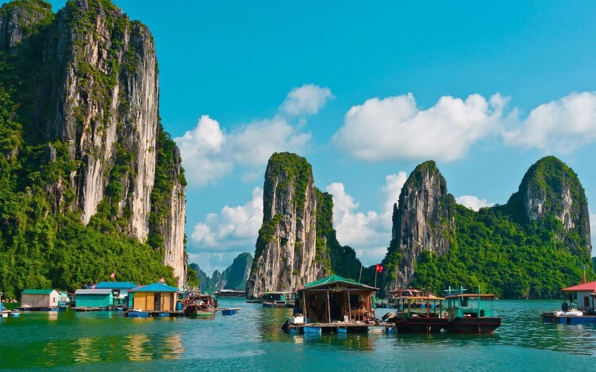
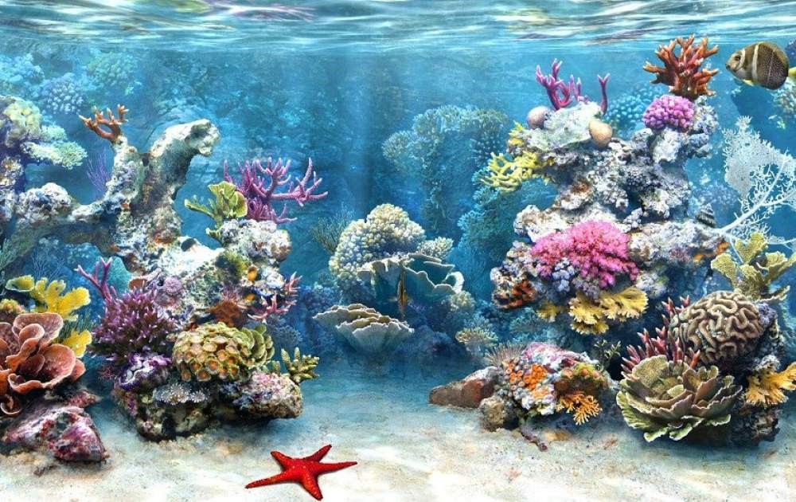
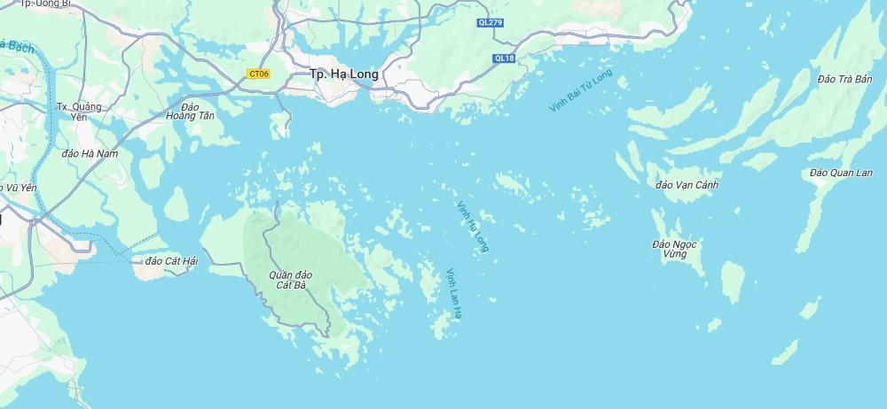

Vịnh Hạ Long là một Vịnh thuộc tỉnh Quảng Ninh, Việt Nam. Vịnh từng được UNESCO nhiều lần công nhận là Di sản thiên nhiên của Thế Giới.
Vịnh nổi tiếng với gần 2000 hòn đảo lớn nhỏ, đặc biệt là đảo đá vôi, trải dài trên 1.553 km2. Trong đó, vùng lõi Vịnh rộng 335 km2, tập trung dày đặc 775 hòn đảo.

Quá trình hình thành và phát triển hàng chục triệu năm giữa địa chất, địa mạo, khí hậu và môi trường đã tạo nên hệ sinh thái đa dạng tại Vịnh. Giờ đây, Hạ Long Bay dày đặc hệ sinh thái rừng, hệ sinh thái biển và ven bờ cùng nhiều tiểu hệ sinh thái khác nhau.
Ngoài ra, Vịnh còn là nơi sinh sống của hàng ngàn loài động, thực vật đa dạng. Điều này góp phần tạo nên giá trị sinh học độc đáo cho vùng di sản thiên nhiên này.

Vịnh nằm ở phía Đông Bắc, thuộc địa phận tỉnh Quảng Ninh. Vịnh nằm ở bờ tây Vịnh Bắc Bộ tại khu vực biển Đông Bắc, bao gồm vùng biển đảo của thành phố Hạ Long. Vịnh nằm cách thủ đô Hà Nội khoảng 165km. Đây là một điểm đến dễ dàng tiếp cận và lý tưởng cho những chuyến đi du lịch ngắn ngày hoặc cuối tuần.
